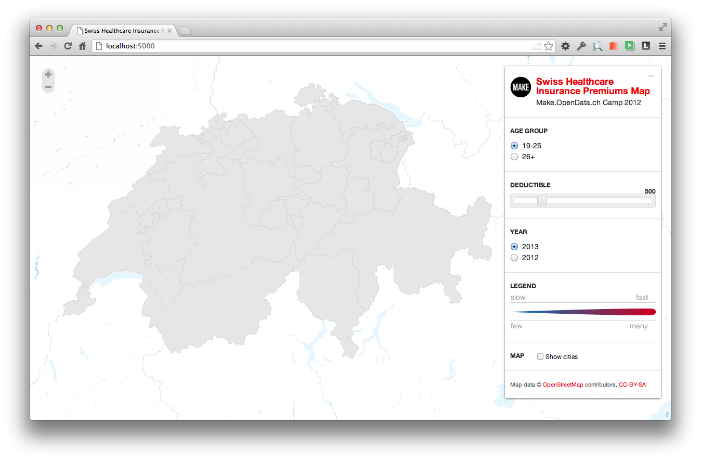

Visualiserung der Krankenkassenprämien
Nachdem wir den Prämiendatensatz vom BAG erhalten haben und diesen mittels einem kleinen Tool (SHIP) in eine Datenbank gebracht haben, sind wir nun dabei die Prämiendaten zu visualisieren. Es ist allgemein bekannt, dass die Prämienunterschiede zwischen einzelnen Kantonen sehr gross sind.

Wir möchten die Daten auf einer interaktiven Karte darzustellen, so dass sich regionale Unterschiede einfach erkennen lassen. Für die Karte sollen sich dann dynamische Filter setzen lassen. Interessant könnten hier gewisse "Kovariablen" wie Ärzte- oder Spitaldichte sein. Auch die Entwicklung über Zeit ist sicherlich nicht uninteressant.

Für die interaktive Karten-App bauen wir auf die Applikation "Swiss Train Flows", welche am letzten Swiss Open Data Hackday in Zürich entstanden ist.
Im Team "SHIP" Swiss Open Data Hackday:
- Denis Krienbühl (https://github.com/href)
- Colin Frei (https://github.com/colinfrei)
- Patrick Staehlin (https://github.com/packi)
- Oliver Egger (https://github.com/oliveregger)
- Fabian Reinhard (https://github.com/freinhard)
Last but not least das GitHub Repository: https://github.com/seantis/ship
#
Stand der Arbeiten
Update FR 28.09.2012 17:30: Kantonsgrenzen auf die Karte zeichnen mit GeoJSON

Update FR 28.09.2012 18:48: Wir werden definitiv ein schönes Farbschema brauchen! Hier ein verdammt schönes Beispiel von http://mbostock.github.com/d3/talk/20111018/choropleth.html

Update FR 28.09.2012 19:24: Ich habe gerade die kleine Python Webapp auf meinem Notebook installiert:
- Die Karte wird geladen
- Die Kantonsgrenzen sehr ordentlich eingezeichnet!

Update FR 28.09.2012 19:46: Wir haben erste Farben! Wow!!

Update FR 28.09.2012 21:02: Wie visualisieren wir die Ärztedichte pro Kanton?

Update SA 29.09.2012 10:15: Tag zwei der Hackdays. Wir haben nun neue Farben mit mehr Bedeutung: rot = über den CH-Durchschnitt / grün = unter dem CH- Durchschnit